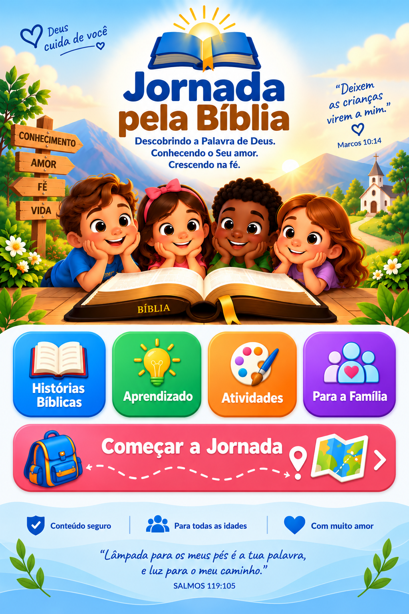

“Lâmpada para os meus pés é a tua palavra, e luz para o meu caminho.”
Aqui a criança e a família podem acessar uma Bíblia Sagrada Cristã para consulta.
O acesso abaixo abre a Bíblia disponível no Project Gutenberg.
Responda 5 perguntas. A resposta correta ficará verde e a incorreta ficará vermelha.
Escolha uma cor e desenhe sobre a Arca de Noé e os animais.
Toque em duas peças para trocar suas posições.
Separem alguns minutos para conversar com Deus juntos.
Escolham uma história bíblica e conversem sobre o que aprenderam.
Pergunte à criança o que ela entendeu e como pode colocar aquele ensinamento em prática.
Escolham juntos uma atitude de amor, bondade, perdão ou solidariedade para praticar.